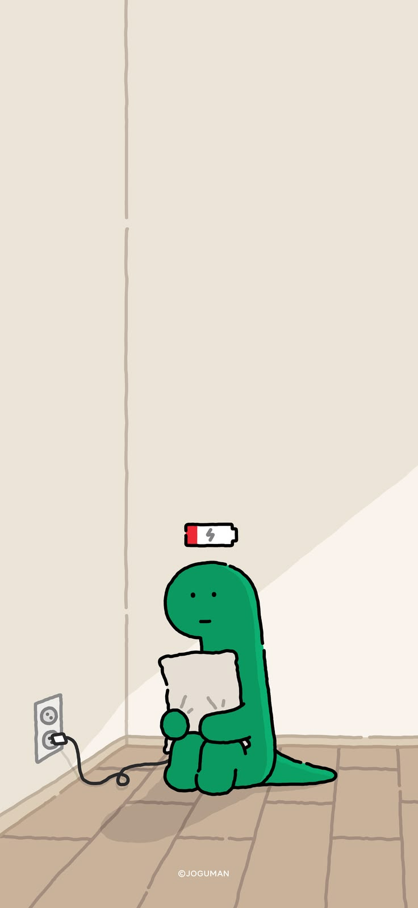
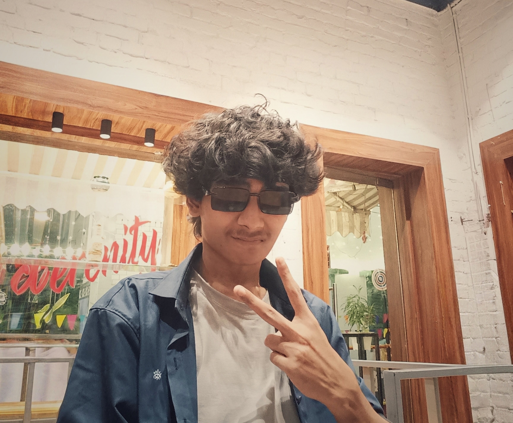

Algorithms
Sorting Algorithm Visualizer
A Python visualization of Bubble Sort and Selection Sort. Color-coded bars show comparisons, swaps, and sorted positions as the algorithms work through a randomly generated array.
- Python
- Matplotlib
- NumPy
Romyojit Paul Kolkata, India
Curious about Programming, Photography, and Mathematics.
Explore my projects
Hi there! I'm Romyo, just a guy who loves diving into the world of technology. I spend a lot of time exploring AI/ML, Robotics, Networking, and Pentesting because I find it fascinating to figure out how things work. I also enjoy photography, it’s a great way to spark new ideas. And when I’m not doing all that, you’ll probably find me playing games, which is my favorite way to unwind and have fun. Also I love Mathematics :)

Outlined below is a summary of my expertise in various fields.
I am continually expanding my knowledge in the field of technology. As part of this journey, I have developed several open-source projects, which are hosted on GitHub and listed below.
Algorithms
A Python visualization of Bubble Sort and Selection Sort. Color-coded bars show comparisons, swaps, and sorted positions as the algorithms work through a randomly generated array.
Hackathon
A hackathon project exploring direct connections between farmers and buyers. The proposed platform combines market information, crop-price forecasting, and location-based matching to help farmers make selling decisions.
Mathematics
A collection of Python scripts for calculations in calculus and linear algebra, alongside graph plotting. This brings together my interest in mathematics and programming through numerical and symbolic computation.
Cybersecurity
This is a project to run a script when a usb is connected(Like Rubber Ducky). Usb Rubber Ducky has a inbuilt microcontroller which automatically runs the code when usb is connected, But I have made this to run script without Microcontroller.
Cybersecurity
It's a radio wave interceptor made with Python. I used the FFT (Fast Fourier Transform) in the Scipy library to decode the radio wave signals. I haven't posted it anywhere because it's still incomplete and it needs an RTL-SDR receiver, which is expensive.
Web
This is a random meme finder which uses python script to bring memes from reddit in 1 second interval and shows it to the webpage.
Professional website
A personal portfolio website I made to write up my progress.
Unhosted
It's a Minecraft bot which connects to specified server with port. Then it can be commanded to mine or used as afk bot.
I am currently learning all the basics math and theory of Machine Learning from the free resources on the Internet, mainly from Stanford CS229-Autumn ML course of 2018. Then I'm planning to learn the necessary tools of python to implement or make some projects using Machine Learning ^_^